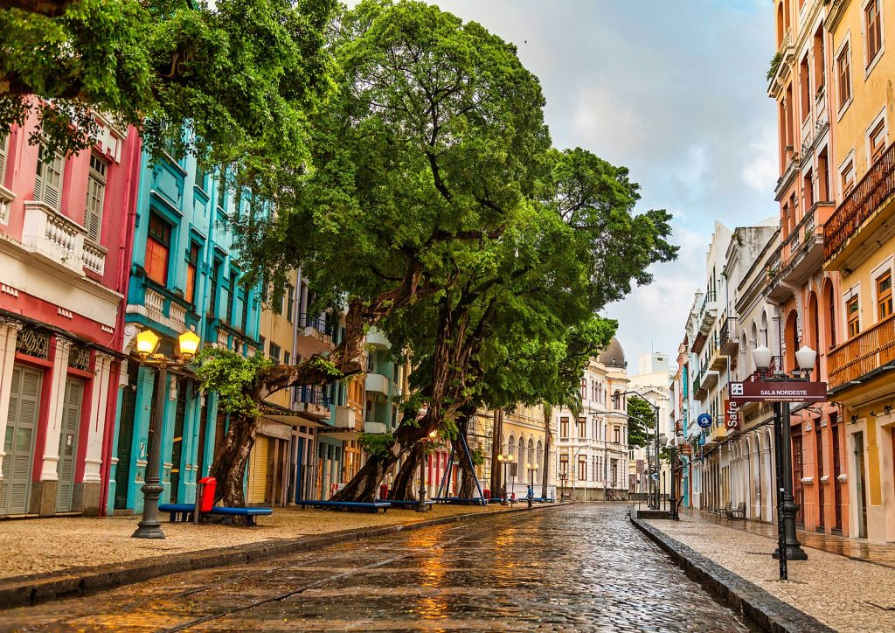
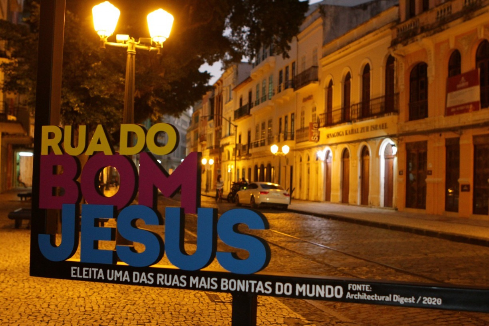

O Paço do Frevo é um centro cultural situado no coração do Recife Antigo, dedicado à celebração, preservação e promoção do frevo, um dos mais icônicos gêneros musicais e danças do estado de Pernambuco. em como missão preservar a memória do frevo e promover a sua prática e valorização

Está localizado em um edifício histórico restaurado, que antigamente era um sobrado do início do século XX. O espaço é dividido em várias áreas dedicadas a diferentes aspectos do frevo.

A Rua do Bom Jesus é uma das ruas mais históricas e culturalmente ricas do Recife Antigo. Esta rua, anteriormente conhecida como Rua dos Judeus, possui uma história rica e oferece uma experiência fascinante para os visitantes.
A rua recebeu o título de uma das ruas mais bonitas do mundo pela publicação "Architectural Digest", uma renomada revista internacional de arquitetura e design. Este reconhecimento destaca a beleza e a importância histórica desta via icônica.
